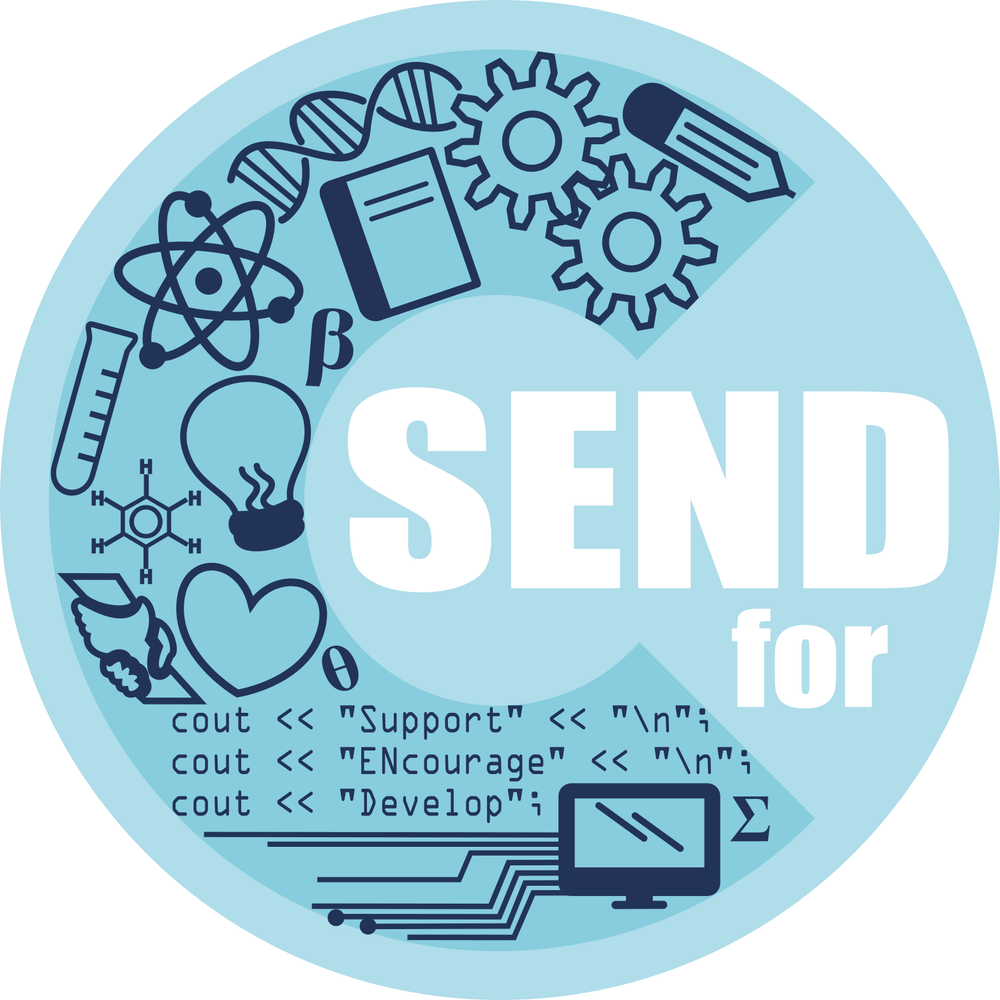

SENDforC
Logo Redesign • Organizational Branding • Informational Graphic

SENDforC is a national non-profit organization across multiple university chapters that aims to Support, Encourage and Develop for Children. It encourages students currently at higher-education institutions to mentor diverse high school students, whom are often from under-represented backgrounds. The goal of SENDforC is to nourish a healthy interest in all fields of STEAM (science, technology, engineering, art, and math). My goal as a designer in SENDforC is to help teams recruit more mentors through branding and making information readily available.
Process
One of my very first tasks was to help with a logo redesign. This was the original logo that I had the oppotunity to redesign:
One of the main drawbacks of this particular design that I personally had was that the logo tried to highlight SENDforC's goal to spread STEAM learning by only making the logo out of numbers. The original logo also did little to represent SENDforC's mentorship and leadership. Because of this, I wanted to design a logo that would try to capture ALL of what SENDforC stood for - which turned out to be quite a lot:

This was my first attempt at a logo redesign. I tried hard to incorporate all the elements that made up SENDforC. The team wanted to keep the light blue color scheme because of its association with calmness and wisdom. However, this particular logo was a no-go for the following reasons:
- Waaaaayyyyyy to busy!!
- The "C" was difficult to make out - if this were a black/white print on a document, it would be difficult to see anything at all
And thus, I tried to simplify my thinking - "rather than trying to capture everything that makes up SENDforC, what is the most important aspect of the organization?". It was mentorship! So for the next redesign attempt, I tried to highlight that particular element:
With this new logo, I made the two tails of the letter "C", grasp one another to showcase SENDforC's mentorship towards children. However, while this new logo was cleaner, one of the main criticisms that I was given was that it was still a bit too simple. Additionally, the team wanted to keep the "for" in the logo as well for consistency with the organization name. It was at this time, that I also learned that SENDforC's slogan is "Contribute locally, impact globally". With this new information, I created my final redesign attempt:
Reflection